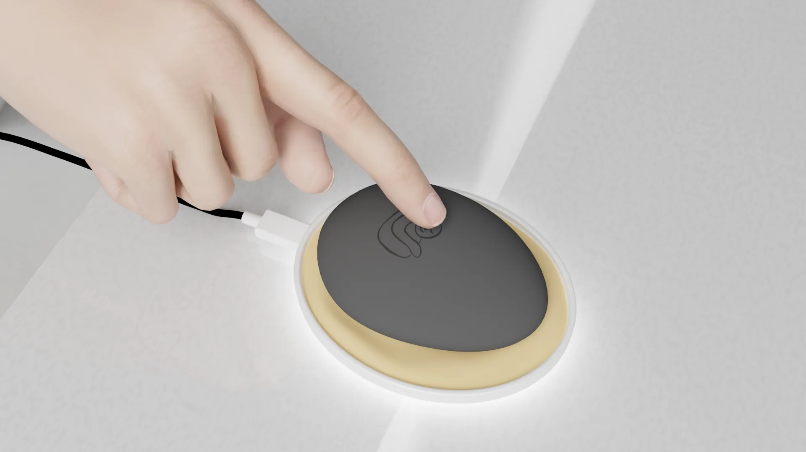

Personal Meditation Device
iEmbrace Stone & Charging Pad
- Role
- Product Designer
- Timeline
- Feb to Sep 2025
- Client
- iEmbrace
- Tools
- Fusion 360, Blender, PLA 3D printing
A tactile meditation experience
The iEmbrace Stone is a handheld meditation device designed to help users find moments of calm and mindfulness in their daily lives. Paired with the iEmbrace App and charging pad, meditation can be experienced in one's hands or on a desk.
The Stone is made from ABS plastic and coated in soft-touch coating. It contains temperature and vibration settings adjustable via the iEmbrace digital app. The wireless charging pad is made from ABS plastic and coated in soft-touch coating, with a Bluetooth connectivity button on the side and USB-C compatibility.
Credit: Daniel Ramsammy (Stone sketches and 3D model variants), Marc Sawyer (female hand model license), Kevin Ruiz (male hand model license)
PROBLEM STATEMENT
Users want a tangible, portable way to ground themselves, especially for those experiencing high stress and anxiety.
How might we make the experience of meditating tactile, portable, and accessible to everyone?